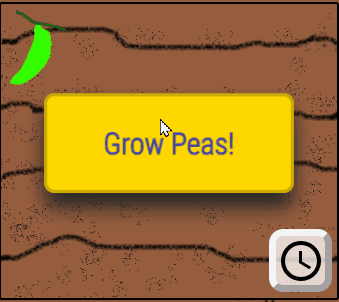
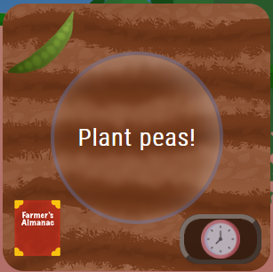
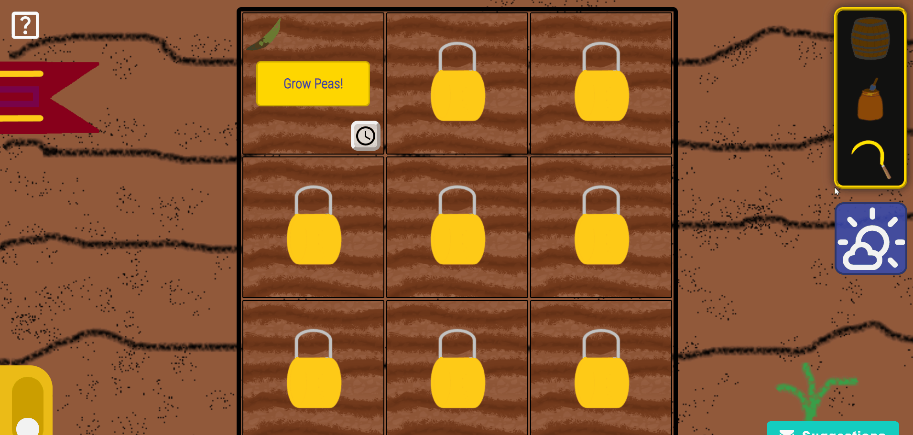
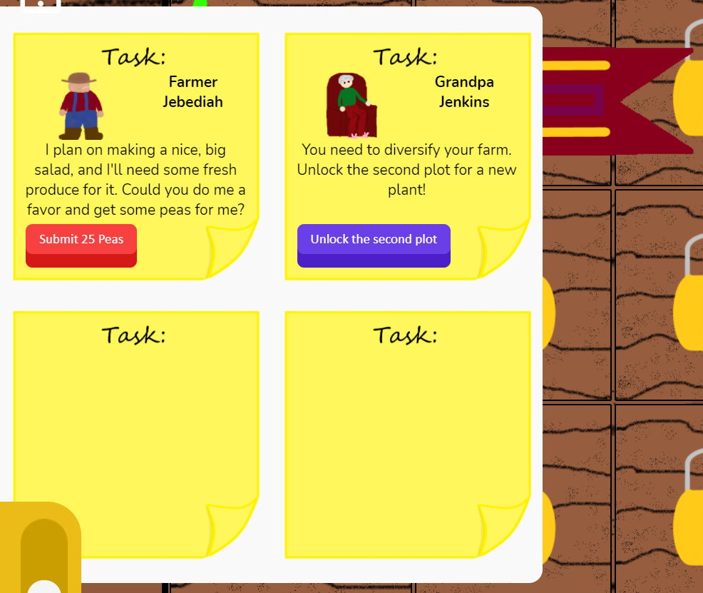
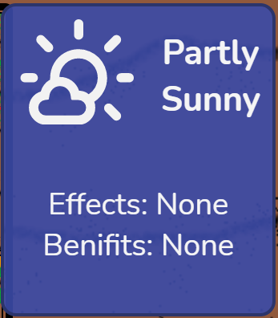
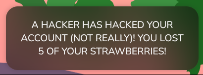
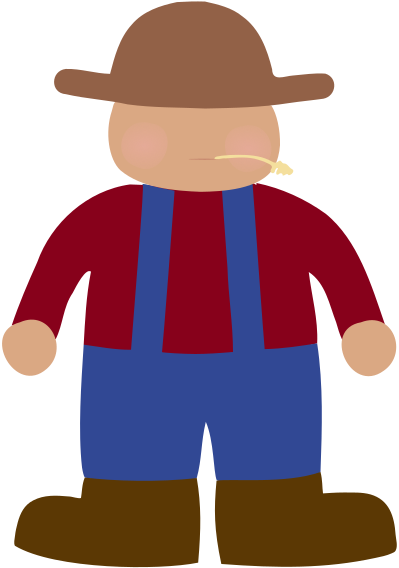
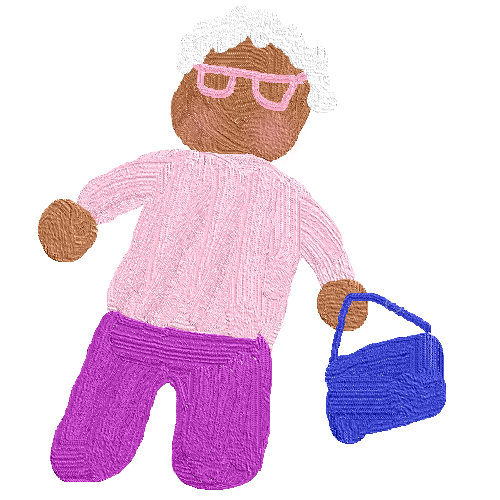

Help Center
This is an incomplete guide of Vegetable Dash. If anyone wants to make changes or add new pages, email me at editorrust@gmail.com
Planting
Just press the button that says "Grow [plant]", then use a rare and powerful skill called patience, and wait until it says "Harvest [plant]".
Harvesting
A button shall appear out of thin air, and written on it shall be that wonderful word: "Harvest [plant]"". You want to press that button. By doing this, you shall gain 1 vegetable of that type. By harvesting there is a 5% chance of collecting a Market Reset and a 10% chance of collection 2 extra vegetables.
Plots
Plots are where vegetables are grown. Any plot can grow any type of vegetable. You can select the type of vegetable when the plot is empty by clicking on the farmer's alamanac in the bottom left corner. You can buy new plots with Coins in the Shop.
Coins
In this wonderful utopia, coins are the only currency, most carrots are purple, and the sky is always blue except the times when it is not. Many things require the use of coins, such as buying plots, plant seeds, and buying produce in the Market. You can collect coins by selling produce in the Market.
Market
The market is a wonderful and bustling place filled with plenty of vegetables. It can be found by clicking the shop icon in the left sidebar. It contains stalls for each of the vegetables you own, with the amount of each vegetable and how much Coins they will sell or be bought for. Vegetables are sold and bought in batches of 5!
You can reset all market costs back to their original values with Market Resets.
Holding Shift multiplies you order by 5 (sell 25 buy 25), while holding Ctrl multiplies it tenfold (sell 50 buy 50).

Shop
In the shop, you can buy plant seeds and new plots!
Market Exchanges
To be found in the market is a place where many traders come to show their goods, the market exchanges corner. For an amount of one vegetable, you can get a set amount of another, no Coins required.

Black Market
The black market is a wonderful and bustling place filled with plenty of illegal items. It located at an undisclosed location. For an amount of Coins you can purchase illegal items such as Market Resets. But watch out! There is a 2% chance that the police will catch you and make you pay a terrible fine! To make matter worse, when you make a trade, the chance goes up by 1%.
Market Resets
Market resets can be found as the last item in the Market. Using one vill reset all of the values in the market to what they began as, not the outrageous price they have become. There is a 1% chance of collecting one after each trade, and a 5% chance after each harvest.

Fertilizer
Fertilizer is a useful item, that when used on a plant will take 30 minutes off the growth time and double the yeild. Fertilizer can be bought in the Black Market, or earned from Tasks.
Tasks
Tasks are small chores that Farmer Jebediah, Grandpa Jenkins, Grandma Josephine, or special guests request that require you to do a task for them or pay some items. They give helpful rewards like Fertilizer and Market Resests.
Weather
Weather is a natural phenomenon that sometimes occurs, usually in the sky. It will effect your plants, sometimes positively and sometimes negatively. Keep a close eye on the weather in the bottom right corner! Next weather can be seen on the bottom right and last weather on the bottom left.
Disasters
Disasters occur every once in a while, a chance of them occurring happening every eight minutes. This could result in losing crops and other undesirable happenings.
Weeds
Weeds are small little plants that grow places you don't want them to. However, you do want these weeds, because of you gather enough and compost them you get fertilizer! Weeds will appear in random plots, and if you harvest five you will receive one fertilizer.
Farmer Jebediah
Previous owner of the farm, you closest adviser. He gives many important Tasks.
Grandpa Jenkins
Guide on everything farming, bearer of the Bunny Slippers, and giver of Tasks.

Grandma Josephine
Your personal economic adviser, and giver of Tasks.
Shortcuts
Shift + Q to toggle Tasks
Shift + S to toggle Settings
Shift + T to toggle Tend cursor, for planting and harvesting
Shift + F to toggle Fertilizer Cursor
Shift + M to toggle Market
Shift + A to Grow/Harvest All
Shift + B to toggle Left sidebar
Shiftx2 to toggle Quick Vegetable Information
Shift + Click to buy x5 in Market
Ctrl + Click to buy x10 in Market
About & Copyright
This game is copyrighted by Editor Rust. If you want to help, email me at editorrust@gmail.com, or send a suggestion.Attribution
Strawberry, Eggplant, Plot, and Pea images are courtesy of Urdons.
Barrel and help icons made by Freepik from www.flaticon.com
Settings icons made by Freepik from www.flaticon.com
Command bar market icon made by Smashicons from www.flaticon.com
Plant clock icon made by bqlqn from www.flaticon.com
Shopping cart from Shopping cart icons created by Vectors Market - Flaticon
Docs last updated with v0.1.4
About Editor Rust
Gold Rush
Vegetable Dash on GitHub
Me on GitHub